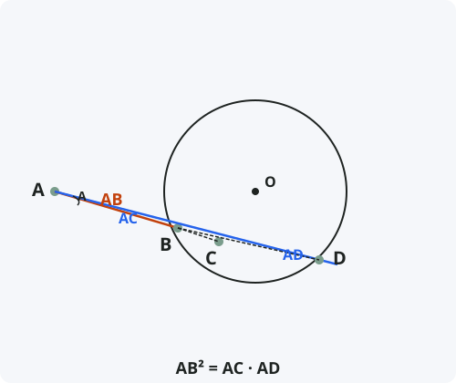

Касательная и секущая
Формулировка
Если из одной точки вне окружности проведены касательная и секущая, то квадрат касательной равен произведению секущей на её внешнюю часть.
Обозначения
Пусть из точки A вне окружности проведены:
AB — касательная (точка B — точка касания).
AC — секущая, пересекающая окружность в точках C и D (C — ближайшая к A точка).
Тогда: AB² = AC · AD

Доказательство
Теорема доказана.
Следствия из теоремы
- Теорема о двух секущих: если из одной точки проведены две секущие, то произведения секущих на их внешние части равны: AC · AD = AE · AF.
- Касательная является предельным случаем секущей, когда точки пересечения C и D сливаются в одну точку B.
- Из теоремы следует, что касательная короче любой секущей, проведённой из той же точки.
- Степень точки A относительно окружности равна AB² (или AC · AD).
Примеры применения
Пример 1. Из точки A проведены касательная AB = 6 и секущая ACD. Найдите AD, если AC = 4.
Решение: AB² = AC · AD ⇒ 36 = 4 · AD ⇒ AD = 9.
Пример 2. Секущая ACD имеет внешнюю часть AC = 5, а вся секущая AD = 20. Найдите длину касательной AB.
Решение: AB² = 5 · 20 = 100 ⇒ AB = 10.
Пример 3. Из точки A на расстоянии 13 от центра окружности радиуса 5 проведена касательная. Найдите её длину.
Решение: По теореме Пифагора: AB = √(13² − 5²) = √(169 − 25) = √144 = 12. (Это согласуется с теоремой о касательной и секущей).
Историческая справка
Теорема о касательной и секущей была известна ещё древнегреческим математикам. Евклид в «Началах» (Книга III, Предложение 36) формулирует и доказывает эту теорему.
Евклид доказывает её через подобие треугольников, как и в современном школьном курсе. Эта теорема — одна из ключевых в учении о степени точки относительно окружности.
Понятие степени точки ввёл Якоб Штейнер в XIX веке, обобщив теоремы о пересекающихся хордах, секущих и касательных.
Интересные факты
- Теорема о касательной и секущей — частный случай степени точки, когда одна из секущих вырождается в касательную.
- С помощью этой теоремы можно построить отрезок, равный √ab, используя только циркуль и линейку.
- В оптике аналогичное соотношение используется для расчёта фокусного расстояния линз.
- Теорема работает и в обратную сторону: если AB² = AC · AD, то AB — касательная к окружности, проходящей через точки B, C, D.
- В навигации эта теорема использовалась для определения расстояния до горизонта по высоте наблюдателя.